텔레마케팅관리사 (2022-04-24 기출문제)
1과목: 판매관리
1. 포지셔닝(Positioning)에 관한 설명 중 틀린 것은?
- 제품 위주의 포지셔닝 맵, 소비자의 지각을 통해 작성하는 인지도 등이 있다.
- 소비자의 마음 속에 내재되어 있는 자사 제품과 경쟁회사 제품들의 위치를 2차원이나 3차원의 도면에 작성한 것이다.
- 기업이 시장세분화를 기초로 한 시장 분석, 고객 분석, 경쟁 분석 등을 바탕으로 전략적 위치를 계획하는 것이다.
- 전략수립의 절차는 “자사 제품의 포지셔닝개발→재포지션닝→자사와 경쟁사의 제품 포지션 분석”이다.
(정답률: 알수없음)

2. 인바운드 마케팅에 활용되는 기술 중에서 다음 설명에 해당하는 것은?
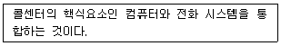
- VOC(Voice of Customer)
- CTI(Computer Telephony Integration)
- CRM(Customer Relationship Management)
- DMB(Digital Multimedia Broadcasting)
(정답률: 알수없음)
3. 다음 중 무점포 소매점의 형태로 볼 수 없는 것은?
- 홈쇼핑
- 편의점
- 방문판매
- 텔레마케팅
(정답률: 알수없음)
4. 마케팅에서 판매촉진 비중이 증가하게 된 주요 원인이 아닌 것은?
- 광고노출 효과
- 소비자 가격 민감도
- 기업 간 경쟁의 완화
- 기업 내 판매성과 측정
(정답률: 알수없음)
5. 다음 중 시장 세분화의 지리적 변수가 아닌 것은?
- 광고노출 효과
- 소비자 가격 민감도
- 기업 간 경쟁의 완화
- 기업 내 판매성과 측정
(정답률: 알수없음)
6. 다음 중 전체시장을 대상으로 하지 않고 소비자 특성에 맞게 세분화한 소비자 집단만의 욕구에 대응하는 마케팅 방법은?
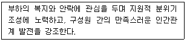
- 대중 마케팅(Mass Marketing)
- 표적 마케팅(Target Marketing)
- 일반 마케팅(General Marketing)
- 스폰서십 마케팅(Sponsorship Marketing)
(정답률: 알수없음)
7. 코틀러(Kotler)가 제시한 제품의 3가지 수준에 해당하지 않는 것은?
- 핵심제품(core product)
- 유형제품(tangible product)
- 확장제품(augmented product)
- 소비제품(consumer product)
(정답률: 알수없음)
8. 소비재 중 전문품의 특성이 아닌 것은?
- 제품이 가지는 전문성이나 독특한 성격이 있고 브랜드 인지도가 높다.
- 소비자는 자기가 원하는 상표를 찾아내기 위해 쇼핑에 많은 노력을 기울인다.
- 생산자가 대부분의 촉진부담을 가진다.
- 가격에 대해서 탄력적이며 구매 전 지식이 적다.
(정답률: 알수없음)
9. 다음 중 가격을 결정할 때 비교적 고가의 가격이 적합한 경우가 아닌 것은?
- 수요의 가격 탄력성이 높을 때
- 진입장벽이 높아 경쟁기업의 진입이 어려울 때
- 규모의 경제효과를 통한 이득이 미미할 때
- 높은 품질로 새로운 소비자층을 유인하고자 할 때
(정답률: 알수없음)
10. 제품수명주기의 단계별 특징과 마케팅이 전략에 관한 설명으로 틀린 것은?
- 도입기 : 판매가 완만하게 상승하나 수요가 적고 제품의 원가 또한 높다.
- 성장기 : 경쟁제품과 모방제품 및 개량제품 등이 나타난다.
- 성숙기 : 이미지 광고를 통한 제품의 차별화를 시도한다.
- 쇠퇴기 : 제품의 수를 확대하거나 재활성화(revitalization)를 시도한다.
(정답률: 알수없음)
11. 다음 중 시장 세분화의 장점이 아닌 것은?
- 마케팅 믹스를 효과적으로 조합하여 활용할 수 있다.
- 시장 수요의 변화에 신속하게 대처할 수 있다.
- 다양한 특성을 지닌 전체 시장의 욕구를 모두 충족시킬 수 있다.
- 세분시장의 욕구에 맞는 시장 기회를 비교적 쉽게 찾아낼 수 있다.
(정답률: 알수없음)
12. 다음 중 아웃바운드 텔레마케팅에 해당되지 않는 것은?
- 대금 회수
- 고객의 불만접수
- 해피콜
- 계약 갱신
(정답률: 알수없음)
13. 시장 세분화를 위하여 고객을 분류하는 방법으로 옳은 것은?
- 소득수준으로 분류해야 하며, 그 외의 다른 분류는 유용하지 않다.
- 나이, 성별에 따라 분류해야 하며, 그 외의 다른 분류는 유용하지 않다.
- 과거의 구매성향(구매시기, 구매량, 구매빈도)으로 분류해야 하며, 그 외의 다른 분류는 유용하지 않다.
- 인구통계, 생활양식(Life Style), 제품의 혜택추구 선호 등 다양한 방법으로 고객을 분류할 수 있다.
(정답률: 알수없음)
14. RFM 모델에 대한 내용이 아닌 것은?
- recency : 얼마나 최근에 자사 제품을 구입했는가
- frequency : 얼마나 자주 자사 제품을 구입하는가
- reflection : 얼마나 자사 제품생산에 영향을 끼치는가
- monetary : 제품구입에 어느 정도의 돈을 쓰고 있는가
(정답률: 알수없음)
15. CRM 고객데이터 중에서 회사에 리스크를 초래하였거나 신용상태, 가입자격 등이 미달되는 고객을 의미하는 것은?
- 비활동 고객
- 로열티 고객
- 잠재 고객
- 부적격 고객
(정답률: 알수없음)
16. 일반적인 아웃바운드 텔레마케팅 도입절차를 순서대로 올바르게 나열한 것은?
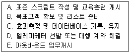
- B→D→A→E→C
- D→E→A→B→C
- A→B→C→D→E
- E→B→D→A→C
(정답률: 알수없음)
17. 포지셔닝에 대한 설명 중 틀린 것은?
- 표적시장에서 차별적 위치를 차지하기 위해 자사제품이나 기업의 이미지를 설계하는 행위이다.
- 포지셔닝에서 활용되는 “차별점(POD)”은 소비자들이 특정 브랜드와 관련하여 연상하는 차별적인 긍정적 속성이나 편익을 말한다.
- 기업이 브랜드에 대한 다양한 주장을 할수록 확실한 포지션을 얻기 유리하다.
- 성공적 차별화를 위해서는 전달성, 선점성, 가격 적절성, 수익성 등을 고려해야 한다.
(정답률: 알수없음)
18. 아웃바운드 텔레마케터의 판매관리 범위에 대한 설명으로 틀린 것은?
- 판매촉진 : 카탈로그, DM발송, email 마케팅 등의 활동
- 시스템관리 : 컴퓨터, 전화, 전산시스템관리 등의 활동
- 고객관리 : 고객 분류, 고객니즈별 구매행위 분석, 고객상담 관리 등의 활동
- 판매준비 : 판매전략 수립, 고객데이터 준비, 상담원 교육, 광고, 안내 준비 등의 활동
(정답률: 알수없음)
19. 일반적으로 가장 많이 사용되며, 제품 원재료 가격에 일정 이익을 가산하여 제품의 가격을 결정하는 것은?
- 관습적 가격 결정법
- 원가가산 가격 결정법
- 경쟁입찰 가격 결정법
- 투자수익률기준 가격 결정법
(정답률: 알수없음)
20. 다음에서 설명하는 점포 형태는?
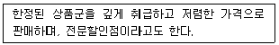
- Category
- Department Store
- Supermarket
- Drug Store
(정답률: 알수없음)
21. 고객서비스 지향적 인바운드텔레마케팅 도입시의 점검사항이 아닌 것은?
- 목표고객의 리스트
- 고객정보의 활용 수준
- 성과분석과 피드백
- 소비자 상담창구 운영 능력
(정답률: 알수없음)
22. 판매촉진 전략에 대한 설명 중 틀린 것은?
- 상품에 따라 촉진믹스의 성격이 달라진다.
- 광고는 비인적 대중매체를 활용하는 촉진수단이다.
- 불황기에는 촉진 활동의 효과가 없다.
- 촉진의 본질은 소비자에 대한 정보 전달에 있다.
(정답률: 알수없음)
23. 다음 중 인바운드 텔레마케팅 업무가 아닌 것은?
- 신속한 전화응대
- 통화량 증감에 따른 대책
- 통화 종료 후 적절한 사후처리
- 주목성을 고려한 카탈로그 선정
(정답률: 알수없음)
24. 제품이나 서비스의 가격을 결정할 때 상대적인 저가전략이 적합하지 않은 경우는?
- 시장수요의 가격탄력성이 높을 때
- 소비자들의 본원적인 수요를 자극하고자 할 때
- 가격에 민감하지 않은 혁신 소비자층을 대상으로 할 때
- 원가우위를 확보하고 있어 경쟁기업이 자사 제품의 가격만큼 낮추기 힘들 때
(정답률: 알수없음)
25. 다음 중 마케팅믹스의 구성요소(4P)에 해당하지 않는 것은?
- 유통
- 가격
- 제품
- 고객
(정답률: 알수없음)
2과목: 시장조사
26. 다음 중 자료 측정 시 타당성을 향상시키는 방법이 아닌 것은?
- 엄격한 개념정의를 하고 대상을 정확히 측정한다.
- 항목들의 의미가 조사자와 응답자 간에 정확한 의사소통이 되도록 신중을 가한다.
- 전문적인 1개의 척도만을 사용하여 측정대상의 집중 타당성을 평가한다.
- 척도 개발 시 측정 대상을 명확히 이해하는 사람에게 맡겨서 내용 타당성을 높인다.
(정답률: 알수없음)
27. 다음 중 전화조사자로 가장 적합하지 못한 유형은?
- 자발적인 사람
- 배타적이고 비판적인 사람
- 친근하고 지식이 풍부한 사람
- 겸손하며 신뢰할 수 있는 영리한 사람
(정답률: 알수없음)
28. 응답자들이 전화조사에 응대하는 심리적인 동기요인이 아닌 것은?
- 자신의 의견이나 식견을 표현하고 싶은 욕망
- 사람들과 주고받는 교섭을 즐기는 심리
- 면접자를 돕고 싶은 이타적인 심리
- 사생활 침해에 대한 오인과 자기방어 욕구
(정답률: 알수없음)
29. 다음 중 우편조사의 응답률에 미치는 영향이 가장 미미한 것은?
- 응답집단의 동질성
- 응답자의 거주 지역
- 응답에 대한 동기부여
- 연구 주관기관 및 지원단체의 성격
(정답률: 알수없음)
30. IMF 이전 특성 의류브랜드 구매액수에 대한 조사, IMF 이후 특정 의류브랜드 구매액수에 대한 조사를 통해 변화를 분석하고자 할 때 가장 적합한 조사 방법은?
- 실험조사 방법
- 종단적 조사 방법
- 횡단적 조사 방법
- 시장조사 방법
(정답률: 알수없음)
31. 시장조사를 하고자 할 때 모집단으로부터 집적적으로 정보를 입수하는 조사방법은?
- 부분조사
- 전수조사
- 표본조사
- 층별조사
(정답률: 알수없음)
32. 다음 1차자료와 2차자료를 비교한 표에서 ()에 모두 적합한 것끼리 짝지어진 것은?
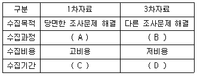
- A : 저관여, B : 고관여, C : 장기, D : 단기
- A : 고관여, B : 저관여, C : 장기, D : 단기
- A : 저관여, B : 저관여, C : 단기, D : 장기
- A : 고관여, B : 고관여, C : 단기, D : 장기
(정답률: 알수없음)
33. 인터넷의 장점을 활용한 온라인 여론조사 방법의 특징이 아닌 것은?
- 전화조사보다 대규모 표본추출이 용이하다.
- 전화조사보다 저렴한 비용으로 신속하게 조사할 수 있다.
- 통계처리 프로그램과 연결하여 실시하는 경우 결과분석이 용이하다.
- 전화조사보다 표본의 대표성이 보장된다.
(정답률: 알수없음)
34. 인과관계를 설정하는 기준으로 적절하지 않은 것은?
- 변인의 중요도
- 연구범위의 제한
- 결정적 원인
- 인과관계의 순환
(정답률: 알수없음)
35. 텔레마케터가 전화조사를 할 때 응답자가 대답을 회피하거나 답하기 곤란해 할 수 있는 경우가 아닌 것은?
- 응답자가 경험한 적 없거나 오래되어 기억하기 어려운 경우
- 텔레마케터가 너무 사무적이거나 불친절한 경우
- 합법적인 목적이나 취지가 담긴 경우
- 사회적으로 무리가 있는 민감한 정보를 질문하는 경우
(정답률: 알수없음)
36. 다항선택식 질문(복수응답)의 설문조사 작성 시 주의할 점이 아닌 것은?
- 선택 항목은 논리적이어야 한다.
- 선택 항목은 하나의 차원에서 제시되어야 한다.
- 각각의 선택 항목이 너무 유사하거나 같으면 좋지 않다.
- 선택 항목은 서로 배타적이지 않으며 구체적이어야 한다.
(정답률: 알수없음)
37. 다음 2차자료의 종류 중에서 외부자료에 해당하는 것만을 모두 고른 것은?
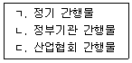
- ㄱ
- ㄴ
- ㄱ, ㄴ
- ㄱ, ㄴ, ㄷ
(정답률: 알수없음)
38. 다음에서 설명하는 표본추출 방법은?
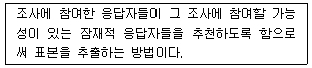
- 할당표본추출법(quota sampling)
- 판단표본추출법(judgment sampling)
- 눈덩이표본추출법(snowball sampling)
- 편의표본추출법(convenience sampling)
(정답률: 알수없음)
39. 다음 문항에 대한 측정방법은?
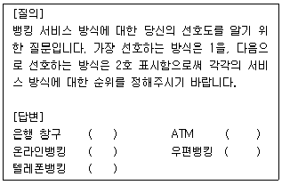
- 비율수준의 측정
- 등간수준의 측정
- 명목수준의 측정
- 서열수준의 측정
(정답률: 알수없음)
40. 다음과 같이 척도의 양 극점에 서로 상반되는 형용사나 표현을 붙이고, 요인분석 등과 같은 다변량 분석에 적용이 용이하도록 자료를 이용하는 척도법은?
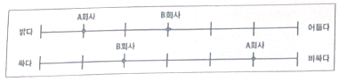
- 거트만 척도법(guttman scale)
- 어의 차이 척도법(semantic differential scale)
- 리커트 척도법(likert scale)
- 서스톤 척도법(thurstone scale)
(정답률: 알수없음)
41. 사용하고자 하는 표본추출법을 결정한 후 표본 크기를 결정할 때의 고려사항 중 틀린 것은?
- 조사자가 표본을 통해 얻은 통계량에 대한 표본오류가 적은 것을 원한다면 표본의 크기를 크게해야 한다.
- 조사자가 통계량을 바탕으로 투정한 신뢰구간에 더욱 확신과 신뢰를 갖고자 한다면 표본의 크기를 크게해야 한다.
- 표본의 크기가 커질수록 시간과 비용이 상승하므로 조사에서 사용 가능한 예산 범위를 고려하여 표본의 크기를 정해야 한다.
- 조사자가 밝히고자 하는 모수에 대한 모집단 내 차이가 미비하고 유사한 특징을 보인다면 표본의 크기를 더욱 크게하여 정확성을 높여야 한다.
(정답률: 알수없음)
42. 조사의뢰인(client)이 지켜야 할 윤리에 대한 설명 중 틀린 것은?
- 조사는 의사결정을 위한 정보를 추출하기 위해 실시되어야 한다.
- 실제 조사를 의뢰할 생각 없이 단지 조사회사의 제안서를 보기 위해 제안서를 요구해서는 안 된다.
- 의사결정을 이미 내린 상태에서 그 결정이 올바름을 확인하기 위한 증거를 확보하고자 조사가 실시되어야 한다.
- 특정 회사를 미리 정해놓은 후 요건을 갖추기 위해 다른 회사에게 제안서를 제출하라고 요구해서는 안 된다.
(정답률: 알수없음)
43. 질문지를 구성하는 일반적인 방법이 아닌 것은?
- 첫 번째 질문은 쉽게 응답할 수 있고 흥미를 유발할 수 있는 것으로 한다.
- 응답자에게 인적사항 질문을 우선적으로 하여 긴장을 풀도록 유도하는 것이 좋다.
- 질문항목 간의 연계 및 관계를 고려하여 질문한다.
- 응답자가 심사숙고를 해야 하는 질문은 가능하면 뒤쪽에 하는 것이 좋다.
(정답률: 알수없음)
44. 조사자가 응답자에 대해 지녀야 할 사항으로 틀린 것은?
- 조사를 통해 모아진 응답자들의 개인 자료를 함부로 사용하거나 공개해서는 안된다.
- 응답자가 조사에 참여하는 동안 신체적, 심리적으로 해로운 상황이 없도록 해야 한다.
- 조사자는 응답자에게 조사의 참여 여부를 강요하지 않고 응답자가 스스로 경정하도록 해야한다.
- 특수성이 있는 경우에는 응답자가 참여하는 조사의 목적과 정보를 제공하는 곳 등을 알려주지 않아도 된다.
(정답률: 알수없음)
45. 확률표본추출방법과 비교한 비확률표본추출 방법의 특징이 아닌 것은?
- 시간과 비용이 적게 든다.
- 표본오차의 추정이 가능하다.
- 인위적 표본추출이 가능하다.
- 연구대상이 표본으로 추출될 확률이 알려져 있지 않다.
(정답률: 알수없음)
46. 다음 중 마케팅조사 과정이 순서대로 올바르게 나열된 것은?
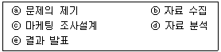
- ⓐ→ⓒ→ⓑ→ⓓ→ⓔ
- ⓐ→ⓒ→ⓓ→ⓒ→ⓔ
- ⓐ→ⓑ→ⓓ→ⓒ→ⓔ
- ⓐ→ⓑ→ⓒ→ⓓ→ⓔ
(정답률: 알수없음)
47. 마케팅믹스 전략 중에서 “제품전략”과 관련된 시장조사의 역할과 목적으로 가장 거리가 먼 것은?
- 타깃 소비자가 제품으로부터 기대하는 편익이 무엇인지 알 수 있다.
- 제품 판매에 적합한 유통경로 및 범위를 파악할 수 있다.
- 기존 제품에 새로 추가하거나 변경해야 할 속성을 파악할 수 있다.
- 브랜드명 결정, 패키지나 로고 대안들에 대한 테스트를 할 수 있다.
(정답률: 알수없음)
48. 전화조사에서 발생될 수 있는 무응답 오류를 의미하는 것은?
- 데이터 분석 시 나타나는 오류
- 적합하지 않은 질문으로 인하여 나타나는 오류
- 조사와 관련 없는 응답자를 선정하여 나타나는 오류
- 응답자의 전화거부로 나타나는 오류
(정답률: 알수없음)
49. 사전조사에 대한 설명 중 틀린 것은?
- 본 조사에 앞서 조사방법과 조사과정이 적절한지 등을 검토하기 위하여 실시한다.
- 마케팅 문제에 대한 사전정보가 적은 경우에 전반적인 환경을 파악하기 위한 탐색 방법이다.
- 사전조사는 본 조사에서 오차를 줄일 수 있도록 본 조사의 50% 정도의 규모를 실시하는 경우가 많다.
- 표본설계에서 표본 크기를 정하고자 할 때 모분산을 모르는 경우에 이를 추정하기 위해서 실시한다.
(정답률: 알수없음)
50. 마케팅성과지표의 설계 및 운영을 위한 조작적(Operational) 정의에 대한 설명으로 가장 적절한 것은?
- 연구하고자 하는 문제를 진술하기 위한 구성개념을 정의한다.
- 구성개념을 측정 가능한 상태가 되도록 정의한다.
- 현상을 설명하는 구성개념을 정의한다.
- 분석대상에 대한 통계적 방법을 정의한다.
(정답률: 10%)
3과목: 텔레마케팅관리
51. 조직의 성과관리를 위한 개인평가 방법을 상사평가 방식과 다면평가 방식으로 구분할 때, 상사평가 방식의 특징이 아닌 것은?
- 상사의 책임감 상실
- 간편한 작업 난이도
- 평가결과의 공정성 미흡
- 중심화, 관대화 오류발생의 가능성
(정답률: 알수없음)
52. 콜센터 문화에 영향을 미치는 개인적 요인과 가장 거리가 먼 것은?
- 직업관
- 사명감
- 근무만족도
- 근로 급여조건
(정답률: 알수없음)
53. 아이오와 대학 모형에 대한 설명으로 옳은 것은?
- 리더십 특성이론에 따른다.
- 20대 여성들의 대상으로 연구한 결과이다.
- 리커트(Likert)의 연구 결과이다.
- 전제적, 민주적, 방임형 리더십으로 분류한다.
(정답률: 알수없음)
54. 다음과 같은 조직설계 방식을 주장한 인물은?
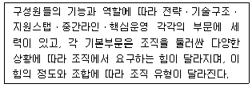
- 톰슨(Thompson)
- 챈들러(Alfred Chandler)
- 마일즈(Miles)와 스노우(Snow)
- 민츠버그(Mintzberg)
(정답률: 10%)
55. 텔레마케터의 업무 능력을 향상시키기 위한 훈련 프로그램으로 가장 적절하지 않은 것은?
- 표현능력 개발
- 코칭능력 개발
- 판매능력 개발
- 정보활용능력의 개발
(정답률: 알수없음)
56. 콜센터의 생산성 향상을 위한 방법으로 가장 효과적인 것은?
- 모니터링은 내부에서만 실시한다.
- 업무 시간대별로 근무입력을 획일화한다.
- 개인별, 팀별로 역할 학습(role playing)을 하고 코칭을 한다.
- 언제나 기본 스크립트를 지속적으로 사용한다.
(정답률: 알수없음)
57. 조직의 성과에 영향을 미치는 채용, 성과평가, 입금, 교육훈련 등 인적자원관리 기능에 대한 설명 중 틀린 것은?
- 성과평가는 구성원의 보상, 동기부여, 능력개발에 결정적인 역할을 한다.
- 시간급제는 성과에 상관없이 일정 시간에 따라서 구성원들에게 입금을 지급하는 방식이다.
- 감수성 훈련은 구성원의 과업수행 과정에서 성과를 높이기 위한 지식과 기술, 기법에 관한 교육훈련이다.
- 조직의 경영혁신과 관련하여 우수한 인력을 채용하기 위해 모집과 선발의 과정에서 지원자의 능력이 강조되고 있다.
(정답률: 알수없음)
58. 직무중심(job-based) 보상과 역량중심(competency-based) 보상의 장점에 대한 설명으로 옳은 것은?
- 직무중심 보상은 지속적인 학습과 개발을 유도한다.
- 역량중심 보상은 인력운영에서 수평적 인력이동과 같은 유연성이 있다.
- 직무중심 보상은 동일 직무에서도 차별적 보상이 가능하다.
- 역량중심 보상은 직무가치에 대한 보상을 의미하며, 객관성 확보가 상대적으로 용이하다.
(정답률: 알수없음)
59. 콜센터 상담원 모니터링의 목적과 가장 거리가 먼 것은?
- 상담원의 통화품질 평가
- 상담원의 스킬 향상
- 고객 만족과 로열티, 수익성 향상을 위한 관리
- 상담원의 실적 관리 및 통제
(정답률: 알수없음)
60. 텔레마케팅을 통해 얻을 수 있는 기업의 혜택이 아닌 것은?
- 효율적 비용관리
- 현금흐름의 통제
- 효율적 시간관리
- 시장 확대
(정답률: 40%)
61. 허시와 블랜차드(Hersey&Blanchard)에 의해 분석된 리더십 스타일 중 다음에서 설명하는 리더의 유형은?
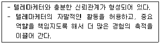
- 지시형
- 위양형
- 자유형
- 참여형
(정답률: 알수없음)
62. 다음과 같이 담당하는 업무의 성격에 따라 팀이 구분되는 조직의 명칭은?
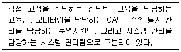
- 기능별 조직
- 피라미드 조직
- 라인별 조직
- 매트릭스 조직
(정답률: 알수없음)
63. 인사이동의 유형 중에서 연공주의 승진의 요소가 아닌 것은?
- 근속연수
- 연령
- 학력
- 직무수행능력
(정답률: 알수없음)
64. 텔레마케터의 대한 코칭을 통해 얻고자 하는 효과가 아닌 것은?
- 모니터링 결과에 대한 커뮤니케이션
- 텔레마케터의 업무 수행능력 강화
- 특정 부분에 대한 피드백 제공과 지도 및 교정
- 특정 행동에 대한 감시와 감독
(정답률: 알수없음)
65. 다음 중 텔레마케팅 활동으로 볼 수 없는 것은?
- 백화점에서 생일고객에게 축하 전화를 한다.
- 여행사에서 팩스를 이용하여 새로운 여행상품을 소개한다.
- 이동통신사에서 전화로 신상품에 대한 고객 반응을 조사한다.
- 우연히 길에서 마주친 동창생에게 상품을 소개하였다.
(정답률: 알수없음)
66. House의 경로-목표이론(path-goal model)이 제사하는 리더십 유형 중 다음에서 설명하는 것은?
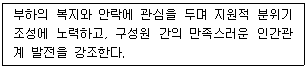
- 지시적 리더십(directive leadership)
- 참여적 리더십(participative leadership)
- 지원적 리더십(supportive leadership)
- 성취지향적 리더십(achievement oriented leadership)
(정답률: 20%)
67. 콜센터의 성과지표에 관한 설명 중 틀린 것은?
- 포기율은 콜센터 구성원의 성과지표에 사용할 수 있는 척도이다.
- 평균처리시간은 평균통화시간과 평균후처리시간을 합산한 것이다.
- 응답시간은 즉시 처리할 필요가 없는 상담에서 성과지표로 사용된다.
- 업무프로세스 상 반드시 전환되어야하는 콜이라 해도 FCR에는 포함되지 않는다.
(정답률: 알수없음)
68. 텔레마케팅에 대한 설명으로 옳은 것은?
- 방문상담을 통한 수익창출 형태의 마케팅 기법이다.
- 전용 교환기 및 CTI 장비를 갖춘 콜센터가 반드시 필요하다.
- 웹사이트 상으로 상품판매나 고객지원이 가능한 경우에는 별도로 전화 상담원을 둘 필요가 없다.
- 홈쇼핑 광고를 통해 소비자에게 주문 전화를 유도하여 상품을 판매하는 것도 텔레마케팅의 기법 중 하나이다.
(정답률: 알수없음)
69. 조직개발 제도의 종류 중에서 다음과 같은 기법이 사용되는 것은?
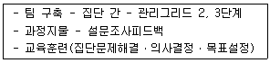
- 집단행동개발
- 개인행동개발
- 조직체 행동개발
- 감수성훈련
(정답률: 알수없음)
70. 효율적인 콜센터 운영을 위한 고려사항으로 가장 적절하지 않은 것은?
- 관련 부서와의 긴밀한 협조
- 콜센터 조직구성원 간의 신뢰
- 고객의 요구수준에 부합한 서비스 제공
- 동료 간의 철저한 경쟁을 통한 성과급 지급 체계
(정답률: 알수없음)
71. 인력의 수요를 예측하는 방법 중에서 질적 방법에 해당하지 않는 것은?
- 시나리오분석
- 자격요건분석
- 델파이법
- 회귀분석
(정답률: 알수없음)
72. 역량관리를 위한 직무분석에 대한 내용 중 틀린 것은?
- 직무를 수행할 종업원을 분석하는 것이 아니라 직무를 분석하는 것이다.
- 개인의 역량과 조직의 목표 간 직접적인 연결 관계가 있다.
- 성공적 직무수행에 반드시 필요한 것이라고 규명된 일련의 역량세트로 구성된다.
- 직무 담당자가 성공적으로 일을 수행할 수 있는 역량을 갖는 것에 포점을 맞춘다.
(정답률: 알수없음)
73. 콜센터의 정량적 평가지표인 서비스 레벨에 대한 설명 중 틀린 것은?
- 전화응대 스크립트의 품질수준을 나타내는 지표이다.
- "X%의 콜을 Y시간 내에 응대“와 같은 형식으로 표시한다.
- 고객들의 통화대기시간에 대한 평균적인 수준을 가장 잘 나타내는 지표이다.
- 인바운드 콜센터의 대표적인 관리지표 중 하나이다.
(정답률: 알수없음)
74. 조직변화에 따른 저항이 발생하였을 때의 관리방법으로 옳은 것은?
- 정보가 부족하거나 분석이 부정확한 상황에서는 참여와 몰입을 통해 관리한다.
- 두려움이나 의구심으로 인해 저항할 때는 촉진과 지원을 통해 관리한다.
- 변화에 실패하거나 저항세력이 클 때는 조직과 호선을 통해 관리한다.
- 신속성이 필요하고 변화 담당자가 힘이 있을 때는 명시적ㆍ묵시적 압력을 통해 관리한다.
(정답률: 알수없음)
75. 변혁적 리더십(transforming leadership)의 예로 적절하지 않은 것은?
- A는 어떤 장애물로 스스로의 능력으로 극복할 수 있다고 나를 신뢰한다.
- B는 내가 고민해온 고질적인 문제를 새로운 관점에서 생각해볼 수 있게 해준다.
- C는 내가 필요한 경우 나를 코치해준다.
- D는 내가 실수를 저질렀을 대에만 관여한다.
(정답률: 알수없음)
4과목: 고객응대
76. 효과적인 CRM을 위한 방법 및 수단이 아닌 것은?
- 고객통합 데이터베이스 구축
- 데이터베이스 마케팅의 기능 축소
- 고객특성 분석을 위한 데이터마이닝 도구 준비
- 마케팅 활동 대비를 위한 캠페인 관리용 도구
(정답률: 알수없음)
77. 고객이 텔레마케터에게 가지는 “인정, 존중, 수용”의 욕구를 충족시킬 수 있는 고객응대 방법은?
- 고객의 사소한 질문을 지적한다.
- 고객의 이름을 부르며 의견을 경청한다.
- 텔레마케터의 생각을 일방적으로 이야기 한다.
- 항상 변론을 제기한다.
(정답률: 알수없음)
78. 다음 중 텔레마케터의 의사소통 방법ㅂ으로 가장 올바른 것은?
- 고객에 따라 경어, 겸양어, 호칭의 사용에 유의한다.
- 음성의 강약, 고저, 발음을 일정하게 유지한다.
- 신속한 응대를 위해 말의 속도를 빠르게 한다.
- 고객과 친밀감을 형성하기 위해 호응어와 맞장구를 빈번하게 사용한다.
(정답률: 알수없음)
79. 커뮤니케이션의 장애 요인에 해당되지 않는 것은?
- 고정관념을 가지고 상황을 판단한다.
- 수신자의 반응과 피드백이 부족하다.
- 발신자의 목표의식이 부족하다.
- 커뮤니케이션에 대한 지식과 기술의 수준이 높다.
(정답률: 알수없음)
80. 다음 중 커뮤니케이션의 특징이 아닌 것은?
- 의사소통 수단의 고정화
- 정보 교환과 의미 부여
- 순기능과 역기능이 존재
- 오류와 장애의 발생 가능성
(정답률: 알수없음)
81. 다음 중 제품에 불만족한 소비자를 상담할 때 필요한 상담처리 기술로 적절하지 않은 것은?
- 참을성이 있도록 공감적 경청을 한다.
- 차분하게 목소리를 상대적으로 낮추어 응대한다.
- 가능한 문제 해결을 위해 최선을 다하고 있음을 전한다.
- 고객사의 민ㆍ형사상 처리절차 등 법적 대응 방안 정책에 대하여 신속하게 알려준다.
(정답률: 알수없음)
82. 시대 흐름에 따라 변화하는 고객 트렌드의 특징으로 옳은 것은?
- 고객의 구매 영향력이 감소하였다.
- 시대의 변화에 따라 고객의 욕구가 점차 통일되는 추세이다.
- 고객의 권위의식이 낮아졌다.
- 고객니즈가 다각화되고 있다.
(정답률: 알수없음)
83. 다음 빅데이터 수집 방법 중에서 크롤링(crawling)과 가장 관련이 있는 것은?
- 웹 로봇(web robot)
- 웹 로딩(web loading)
- 웹 블로그(web blog)
- 웹 로그 데이터(web log data)
(정답률: 알수없음)
84. 상담원이 올바른 상담처리를 할 수 있도록 마인드 컨트롤을 통해 업무능력을 향상시킬 수 있는 방법이 아닌 것은?
- C-마인드 맵(counselor mind map program)
- C-NLP(counselor neuro linguistic programing)
- 감수성 훈련(counselor sensitive training)
- 콜센터 바이탈 사인(call center vital signs)
(정답률: 알수없음)
85. 악덕 소비자나 문제행동 소비자가 증가하는 사업자 측면의 원인이 아닌 것은?
- 사업자의 부정확한 정보 제공
- 지나친 판매증시 경영 태도
- 악의적 불평 행동을 보이는 소비자에게 과다한 보장 제공
- 고객만족 경영을 과도한 소비자의 권리로 오인
(정답률: 알수없음)
86. 감정노동 종사자의 건강보호 조치방법이 아닌 것은?
- 고충처리 위원 배치 및 건의제도 운영
- 고객과의 갈등 최소화를 위한 업무처리 재량권 축소
- 사업장 특성에 맞는 고객응대 업무 매뉴얼
- 휴식시간 제공 및 휴게시설 설치
(정답률: 알수없음)
87. 고객이 문제를 제기하였을 때의 처리절차가 순서대로 올바르게 나열된 것은?
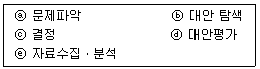
- ⓐ→ⓔ→ⓑ→ⓓ→ⓒ
- ⓔ→ⓐ→ⓑ→ⓒ→ⓓ
- ⓑ→ⓓ→ⓐ→ⓔ→ⓒ
- ⓐ→ⓑ→ⓔ→ⓓ→ⓒ
(정답률: 알수없음)
88. 메타그룹의 산업보고서에 처음 제안된 CRM 시스템 아키텍처의 3가지 구성요소가 아닌 것은?
- 통합 CRM
- 운영 CRM
- 협업 CRM
- 분석 CRM
(정답률: 알수없음)
89. CRM 전략의 수행을 위한 활동 중 고객유치, 고객유지, 교차판매 등 구체적인 마케팅 활동에 필요한 운영상의 의사결정을 목표로 하는 것은?
- 차별적 세분화
- 전술적 세분화
- 혼합형 세분화
- 실행적 세분화
(정답률: 알수없음)
90. 다음 중 의사소통 과정에서의 친밀감(Rapport)형성에 관한 설명으로 옳은 것은?
- 고객에게 슬픈 감정을 유도하는 기법이다.
- 가망고객을 진찰하듯 탐색하는 기법이다.
- 품위를 지키는 프로다운 자세를 느끼도록 하는 기법이다.
- 고객에게 신뢰감을 느끼도록 하는 기법이다.
(정답률: 알수없음)
91. 고객응대에 대한 설명 중 틀린 것은?
- 고객과 커뮤니케이션을 하는 활동이다.
- 고객에게 필요한 정보를 제공한다.
- 고객의 요구를 미리 판단하여 답을 제시한다.
- 고객의 입장에서 판단한다.
(정답률: 알수없음)
92. CRM의 활용 목적에 대한 설명으로 가장 적합한 것은?
- 새로운 고객의 다수 확보에 용이하다.
- 내부고객의 상담을 목적으로 한다.
- 기존 고객을 단골 고객으로 계속 유지하고자 한다.
- 고속도로 휴게소 식당과 같은 곳에서 고객을 유인할 때 효과적이다.
(정답률: 알수없음)
93. 다음 중 빅데이터의 분석을 위해 활용하며, 표본집단의 특성을 나타내는 통계량이 아닌 것은?
- 중앙값
- 최빈값
- 전수
- 분산
(정답률: 알수없음)
94. 고객 만족도 조사가 필요한 이유로 가장 적절하지 않은 것은?
- 마케팅 실무자들의 의사결정에 대한 효과성을 높여준다.
- 고객의 니즈를 규정하고, 고객을 만족시키는 마케팅 활동을 할 수 있도록 도와준다.
- 기업에 대한 고객의 기대를 향상시킨다.
- 고객의 심리적, 행동적 특성 파악에 도움을 준다.
(정답률: 알수없음)
95. 전화를 거는 방법 중에서 가장 좋은 통화 예절은?
- 전화가 연결되더라도 자신이 누구인지는 나중에 밝힌다.
- 통화가 연결되는 즉시 담당자만 바꿔 달라고 한다.
- 얼굴에서 미소를 띠며 밝은 목소리로 전화인사한다.
- 통화가 끝나면 끝인사 없이 수화기를 먼저 내려 놓는다.
(정답률: 알수없음)
96. CRM의 등장배경에 관한 설명 중 틀린 것은?
- 산업 사회에서 정보화 사회로 변화되고 있다.
- 마케팅 전분부서에서 소수 전문가의 책임이 더욱 커지고 있다.
- 기업의 경쟁력은 규모의 경제에서 가치의 경제로 변화되고 있다.
- 소비자들에게 제품구입에 대한 인식이 소유개념에서 공유개념으로 전환되고 있따.
(정답률: 알수없음)
97. 화난 소비자를 대하는 상담전략에 대한 설명으로 옳은 것은?
- “죄송하다”는 말 한마디가 중요하다.
- 고객에게 부당성을 지적하는 응대가 기본전략이다.
- 화난 소비자의 감정 상태를 인정하면 안 된다.
- 문제해결에 소비자의 화난 감정은 중요하지 않다고 유도하는 방향으로 상담을 진행해야 한다.
(정답률: 알수없음)
98. 고객에게 자신의 의도를 적극적으로 전달하는 방법으로 가장 적절하지 않은 것은?
- 자신의 의도를 강력하고 직설적으로 표현한다.
- 상대방이 듣기 좋은 음성과 언어로 대답한다.
- 호감이 가도록 메시지를 표현한다.
- 효과적으로 말하는 방법을 익혀서 전달한다.
(정답률: 알수없음)
99. 고객이 기업과 만나는 모든 때에 기업에 대한 고객의 경험과 인지에 영향을 미치는 “결정적인 순간”을 의미하는 것은?
- CRM(Customer Relationship Management)
- MOT(Moments of Truth)
- MIS(Marketing Information System)
- SCM(Customer Satisfaction Management)
(정답률: 알수없음)
100. 다음 중 CRM을 통해 기업 측면에서 얻을 수 있는 직접적 이익만을 모두 고른것은?
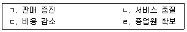
- ㄱ
- ㄱ, ㄴ
- ㄷ, ㄹ
- ㄱ, ㄷ, ㄹ
(정답률: 0%)